Image generated by Microsoft Designer (Image Creator)
2019 Exploratory Data Analysis
Bryan Johns
March 2025
2019 Exploratory Data Analysis
Full Analytical Workflow and Exploratory Outputs
Exploratory Data Analysis, unencumbered by the need to be too presentable.
# load data, combine into df
q1_2019 <- read.csv("./resources/data/q1_2019_cleaned.csv")
q2_2019 <- read.csv("./resources/data/q2_2019_cleaned.csv")
q3_2019 <- read.csv("./resources/data/q3_2019_cleaned.csv")
q4_2019 <- read.csv("./resources/data/q4_2019_cleaned.csv")
stations <- read.csv("./resources/data/stations.csv")
df <- bind_rows(q1_2019, q2_2019, q3_2019, q4_2019)Number of member vs casual rides
table(df$member_casual)##
## casual member
## 880631 29373603 million member rides vs 1 million casual rides. Unfortunately, there is no way to tell how many are repeat users. Presumably, many member riders repeat far more often than casual riders.
In the scenario, and in real life, the data is shared without any sort of identifying information that would help track that, probably why after 2019 they removed gender and birthyear.
!!NOTE!! - Below is where I realized that ride_length was in minutes for 2019, seconds for 2020, and had to adjust data cleaning. It has been rectified.
summary(df$ride_length)## Min. 1st Qu. Median Mean 3rd Qu. Max.
## 1.02 6.85 11.82 24.17 21.40 177200.37There are some ridiculously long rides.
max(df$ride_length) / 60 / 24## [1] 123.0558123 days! Hell of an outlier.
print(df[which.max(df$ride_length), ])## X ride_id started_at ended_at rideable_type
## 148898 148898 21920842 2019-02-14 14:44:13 2019-06-17 16:04:35 3846
## start_station_id start_station_name end_station_id
## 148898 213 Leavitt St & North Ave 360
## end_station_name member_casual gender birthyear date
## 148898 DIVVY Map Frame B/C Station casual <NA> NA 2019-02-14
## month day year day_of_week season hour ride_length start_lat start_lng
## 148898 2 14 2019 Thursday Winter 14 177200.4 41.9102 -87.6823
## end_lat end_lng
## 148898 NA NA# ggplot(df, aes(y = ride_length)) +
# geom_boxplot() +
# labs(title = "Boxplot of Ride Lengths",
# y = "Ride Length (minutes)",
# x = "") +
# theme_minimal()Kinda pointless to plot that.
Rides by Member type (total rides, duration)
# sum total ride length by membership type
total_minutes_ridden <- df %>%
group_by(member_casual) %>%
summarise(total_minutes = sum(ride_length, na.rm = TRUE))
# bar chart of total minutes ridden
ggplot(total_minutes_ridden, aes(x = member_casual, y = total_minutes, fill = member_casual)) +
geom_bar(stat = "identity") +
geom_text(aes(label = round(total_minutes)), vjust = -0.5) +
theme_minimal() +
labs(title = "Total Minutes Ridden by Membership Type", y = "Total Minutes Ridden", x = "Rider Type")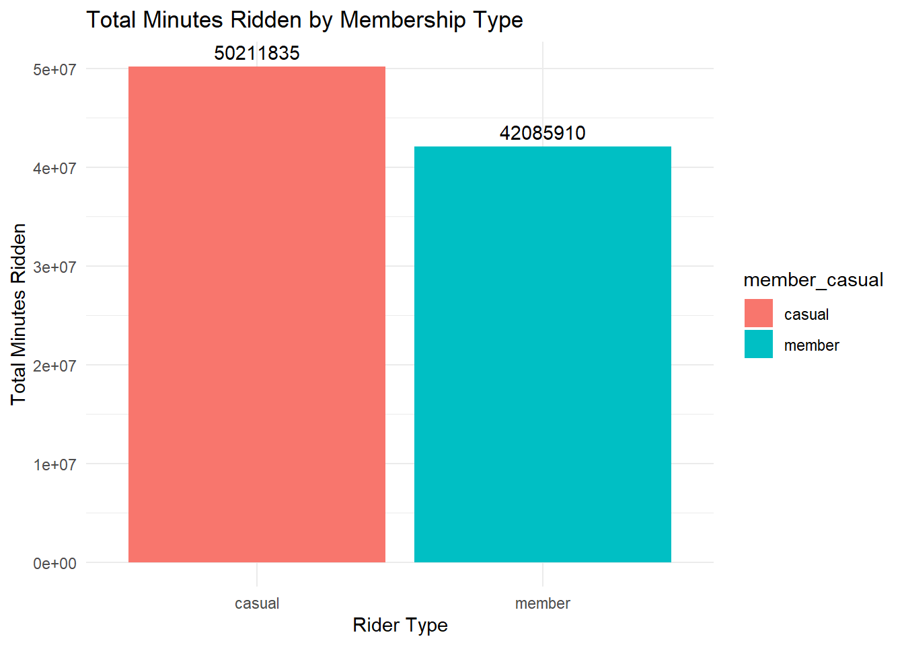
# sum average ride length by membership type
average_ride_length <- df %>%
group_by(member_casual) %>%
summarise(average_minutes = mean(ride_length, na.rm = TRUE))
# bar chart of average ride length
ggplot(average_ride_length, aes(x = member_casual, y = average_minutes, fill = member_casual)) +
geom_bar(stat = "identity") +
geom_text(aes(label = round(average_minutes, 1)), vjust = -0.5) +
theme_minimal() +
labs(title = "Average Ride Length by Membership Type", y = "Average Ride Length (minutes)", x = "Rider Type")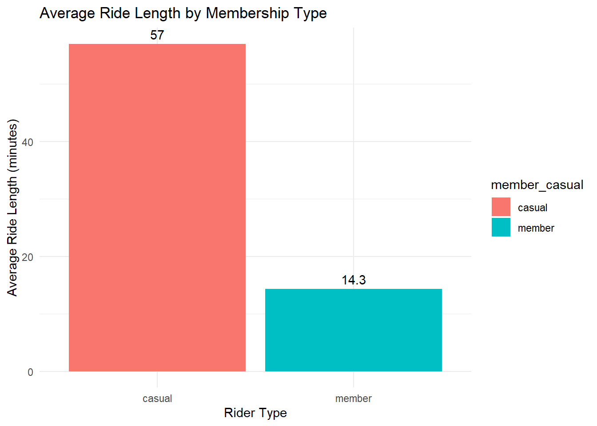
# bar chart 0f ride frequency per user
ggplot(df, aes(x = member_casual, fill = member_casual)) +
geom_bar() +
geom_text(stat = "count", aes(label = ..count..), vjust = -0.5) +
labs(
title = "Total Rides by Membership Type",
x = "Rider Type",
y = "Total Rides"
) +
theme_minimal()## Warning: The dot-dot notation (`..count..`) was deprecated in ggplot2 3.4.0.
## ℹ Please use `after_stat(count)` instead.
## This warning is displayed once every 8 hours.
## Call `lifecycle::last_lifecycle_warnings()` to see where this warning was
## generated.
# histograms of ride length per user type
ggplot(df, aes(x = ride_length, fill = member_casual)) +
geom_histogram(binwidth = 5, alpha = 0.7) +
facet_wrap(~member_casual, scales = "free_y") +
labs(
title = "Histogram of Ride Lengths by Membership Type",
x = "Ride Length (minutes)",
y = "Frequency"
) +
theme_minimal() +
# scale_fill_manual(values = c("member" = "blue", "casual" = "red")) +
xlim(0, 100)## Warning: Removed 63468 rows containing non-finite outside the scale range
## (`stat_bin()`).## Warning: Removed 4 rows containing missing values or values outside the scale range
## (`geom_bar()`).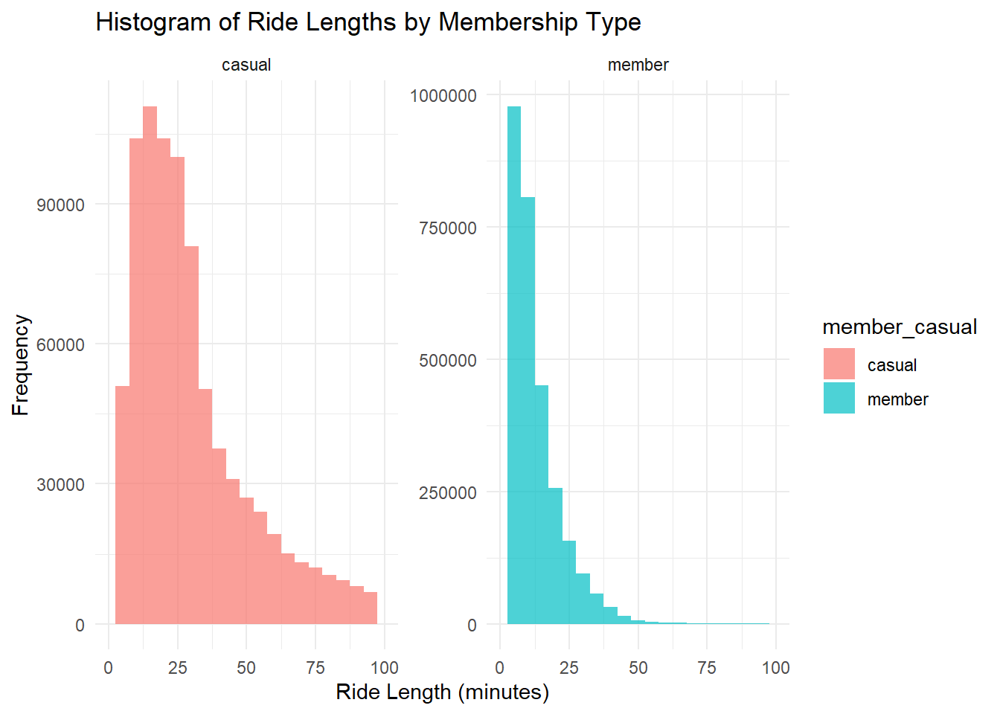
Members ride more frequently for shorter duration (probably commuting).
Casuals ride longer, enough to beat members for total minutes on a bicycle.
Time and Ridership
# line chart of rides per month
df %>%
group_by(month, member_casual) %>%
summarise(rides = n()) %>%
ggplot(aes(x = month, y = rides, color = member_casual, group = member_casual)) +
geom_line() +
geom_point() +
theme_minimal() +
labs(title = "Rides per Month, by Customer Type", x = "Month", y = "Number of Rides")## `summarise()` has grouped output by 'month'. You can override using the
## `.groups` argument.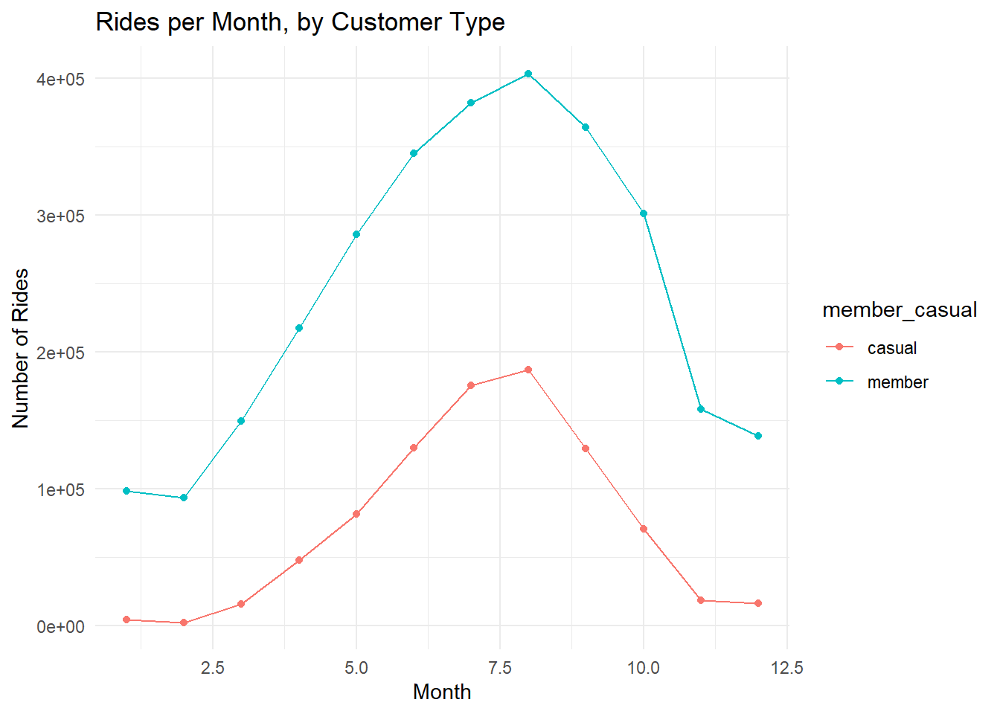
Peak in August, unsurprisingly.
# bar chart of rides per month
df %>%
group_by(month, member_casual) %>%
summarise(rides = n()) %>%
ggplot(aes(x = month, y = rides, fill = member_casual)) +
geom_bar(stat = "identity", position = "dodge") +
geom_text(aes(label = rides), vjust = -0.5, position = position_dodge(0.9)) +
theme_minimal() +
labs(title = "Total Rides per Month by Customer Type", x = "Month", y = "Number of Rides")## `summarise()` has grouped output by 'month'. You can override using the
## `.groups` argument.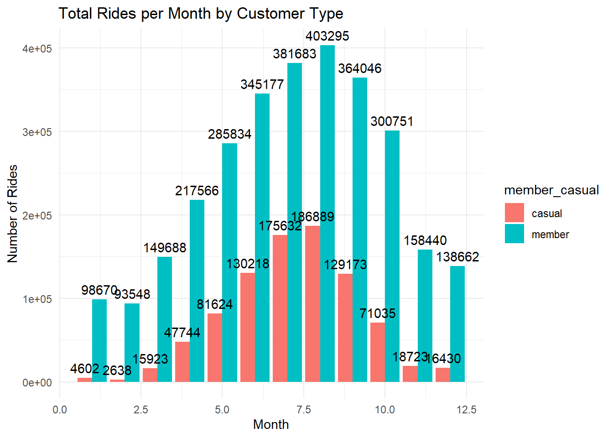
# bar chart of ride length per month
df %>%
group_by(month, member_casual) %>%
summarise(avg_ride_length = mean(ride_length, na.rm = TRUE)) %>%
ggplot(aes(x = month, y = avg_ride_length, fill = member_casual)) +
geom_bar(stat = "identity", position = "dodge") +
geom_text(aes(label = round(avg_ride_length, 1)), vjust = -0.5, position = position_dodge(0.9)) +
theme_minimal() +
labs(title = "Average Trip Duration per Month by Customer Type", x = "Month", y = "Average Trip Duration (minutes)")## `summarise()` has grouped output by 'month'. You can override using the
## `.groups` argument.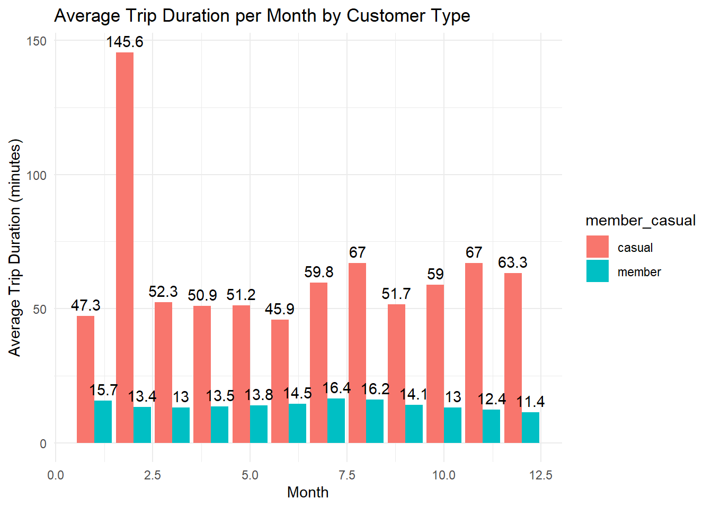
February would be an outlier - very few rides were ridden that month. The law of small numbers. Small sample size bias.
# rides per season
df %>%
mutate(season = factor(season, levels = c("Winter", "Spring", "Summer", "Fall"))) %>%
group_by(season, member_casual) %>%
summarise(rides = n()) %>%
ggplot(aes(x = season, y = rides, fill = member_casual)) +
geom_bar(stat = "identity", position = "dodge") +
geom_text(aes(label = rides), vjust = -0.5, position = position_dodge(0.9)) +
theme_minimal() +
labs(title = "Total Rides per Season by Customer Type", x = "Season", y = "Number of Rides") +
scale_y_continuous(expand = expansion(mult = c(0, 0.2)))## `summarise()` has grouped output by 'season'. You can override using the
## `.groups` argument.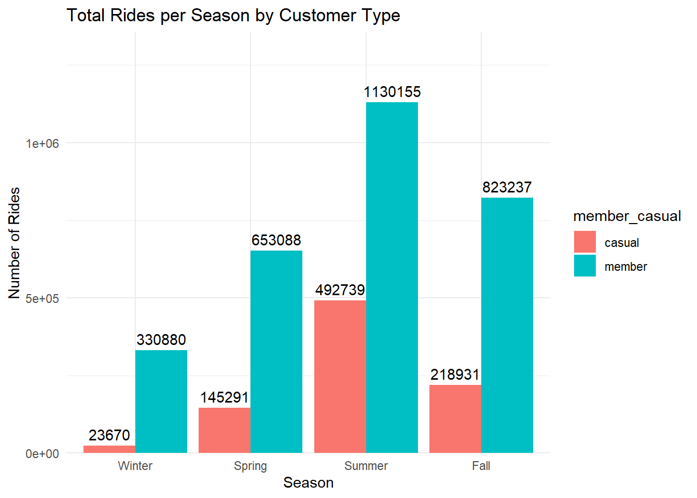
# ride length per season
df %>%
mutate(season = factor(season, levels = c("Winter", "Spring", "Summer", "Fall"))) %>%
group_by(season, member_casual) %>%
summarise(avg_ride_length = mean(ride_length, na.rm = TRUE)) %>%
ggplot(aes(x = season, y = avg_ride_length, fill = member_casual)) +
geom_bar(stat = "identity", position = "dodge") +
geom_text(aes(label = round(avg_ride_length, 1)), vjust = -0.5, position = position_dodge(0.9)) +
theme_minimal() +
labs(title = "Average Trip Duration per Season by Customer Type", x = "Season", y = "Average Trip Duration (minutes)") +
scale_y_continuous(expand = expansion(mult = c(0, 0.2)))## `summarise()` has grouped output by 'season'. You can override using the
## `.groups` argument.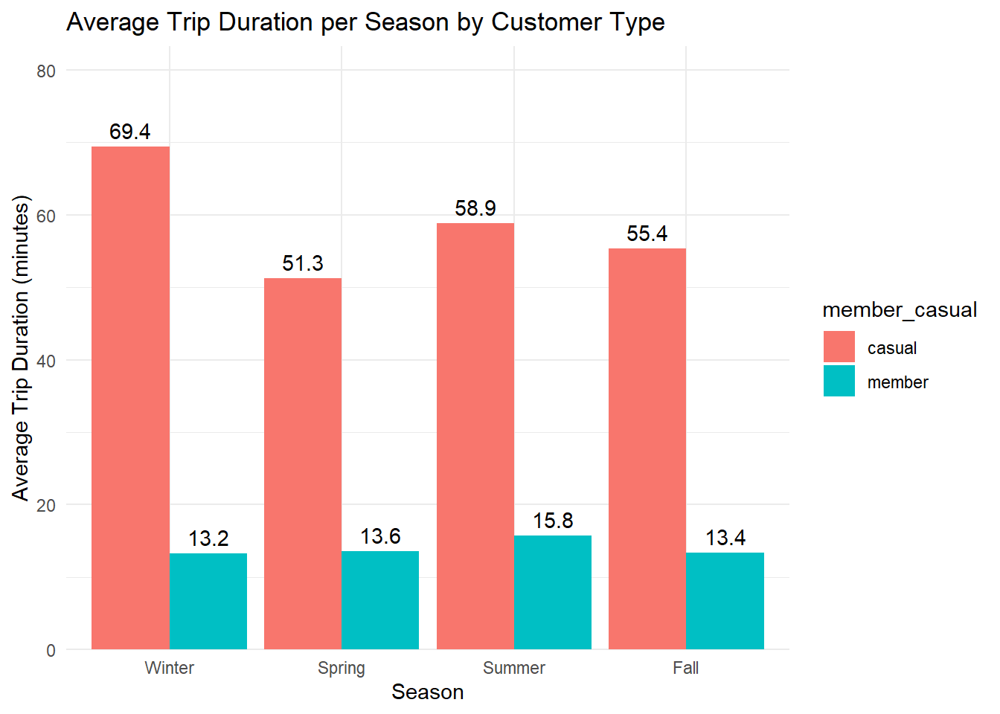
# line chart of rides per hour
df %>%
group_by(hour, member_casual) %>%
summarise(rides = n()) %>%
ggplot(aes(x = hour, y = rides, color = member_casual, group = member_casual)) +
geom_line() +
geom_point() +
theme_minimal() +
labs(title = "Rides per Hour, by Customer Type", x = "Hour", y = "Number of Rides")## `summarise()` has grouped output by 'hour'. You can override using the
## `.groups` argument.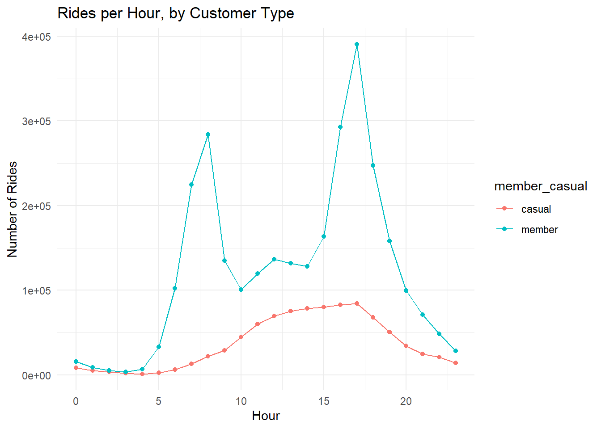
# bar chart of rides per hour
df %>%
group_by(hour, member_casual) %>%
summarise(rides = n()) %>%
ggplot(aes(x = hour, y = rides, fill = member_casual)) +
geom_bar(stat = "identity", position = "dodge") +
theme_minimal() +
labs(title = "Rides per Hour of Day by Customer Type", x = "Hour of Day", y = "Number of Rides")## `summarise()` has grouped output by 'hour'. You can override using the
## `.groups` argument.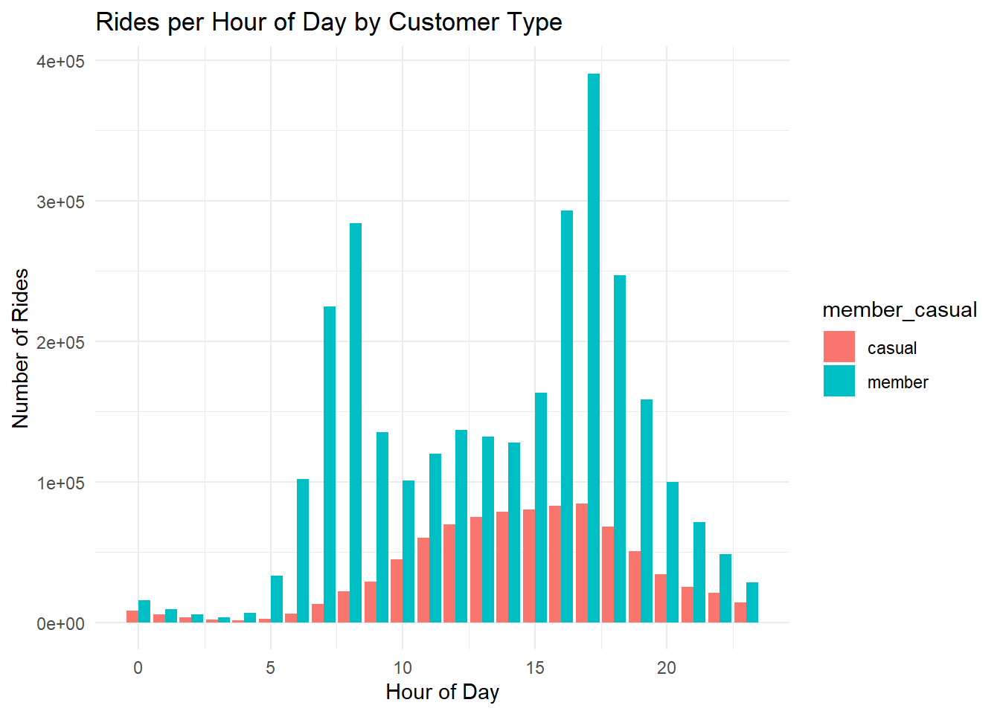
# bar chart of rides per hour by day of week, free y-axis
df %>%
mutate(day_of_week = factor(day_of_week, levels = c("Monday", "Tuesday", "Wednesday", "Thursday", "Friday", "Saturday", "Sunday"))) %>%
group_by(hour, member_casual, day_of_week) %>%
summarise(rides = n()) %>%
ggplot(aes(x = hour, y = rides, fill = member_casual)) +
geom_bar(stat = "identity", position = "dodge") +
facet_wrap(~day_of_week, scales = "free_y") +
theme_minimal() +
labs(title = "Rides per Hour of Day by Customer Type and Day of Week", subtitle = "Free y-axis", x = "Hour of Day", y = "Number of Rides")## `summarise()` has grouped output by 'hour', 'member_casual'. You can override
## using the `.groups` argument.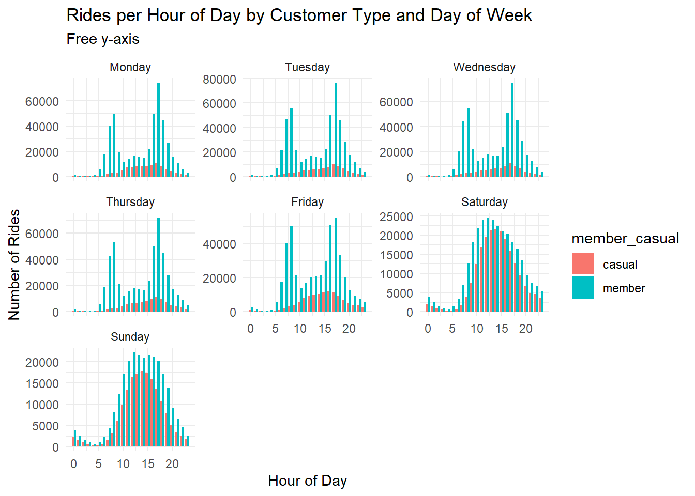
# bar chart of rides per hour by day of week, locked y-axis
df %>%
mutate(day_of_week = factor(day_of_week, levels = c("Monday", "Tuesday", "Wednesday", "Thursday", "Friday", "Saturday", "Sunday"))) %>%
group_by(hour, member_casual, day_of_week) %>%
summarise(rides = n()) %>%
ggplot(aes(x = hour, y = rides, fill = member_casual)) +
geom_bar(stat = "identity", position = "dodge") +
facet_wrap(~day_of_week) +
theme_minimal() +
labs(title = "Rides per Hour of Day by Customer Type and Day of Week", subtitle = "Locked y-axis", x = "Hour of Day", y = "Number of Rides")## `summarise()` has grouped output by 'hour', 'member_casual'. You can override
## using the `.groups` argument.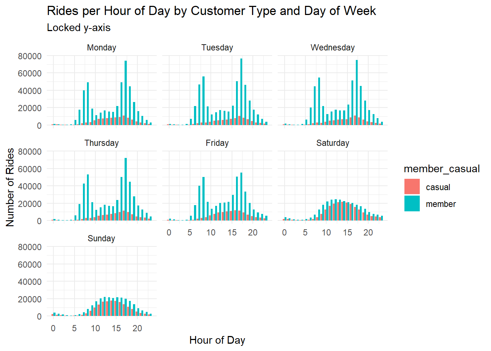
# bar chart of rides / member_casual / day of week
df %>%
mutate(day_of_week = factor(day_of_week, levels = c("Monday", "Tuesday", "Wednesday", "Thursday", "Friday", "Saturday", "Sunday"))) %>%
group_by(member_casual, day_of_week) %>%
summarise(rides = n()) %>%
ggplot(aes(x = member_casual, y = rides, fill = member_casual)) +
geom_bar(stat = "identity", position = "dodge") +
geom_text(aes(label = rides), vjust = -0.5, position = position_dodge(0.9)) +
facet_wrap(~day_of_week) +
theme_minimal() +
labs(title = "Rides per Member Type by Day of Week", x = "Member Type", y = "Number of Rides") +
scale_y_continuous(expand = expansion(mult = c(0, 0.2)))## `summarise()` has grouped output by 'member_casual'. You can override using the
## `.groups` argument.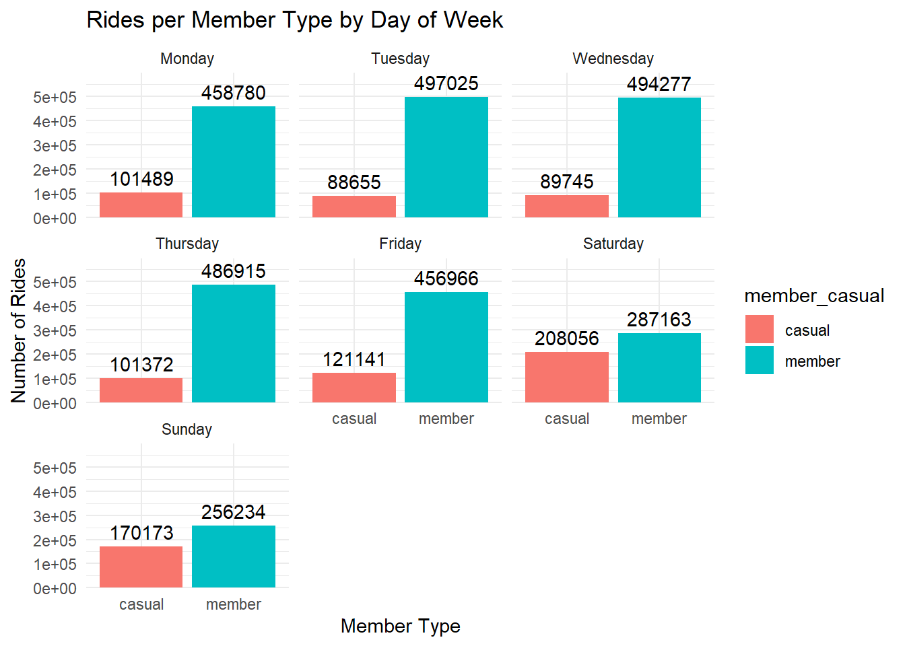
# bar chart of rides / member_casual / day of week
df %>%
mutate(day_of_week = factor(day_of_week, levels = c("Monday", "Tuesday", "Wednesday", "Thursday", "Friday", "Saturday", "Sunday"))) %>%
group_by(member_casual, day_of_week) %>%
summarise(rides = n()) %>%
ggplot(aes(x = day_of_week, y = rides, fill = member_casual)) +
geom_bar(stat = "identity", position = "dodge") +
geom_text(aes(label = rides), vjust = -0.5, position = position_dodge(0.9)) +
theme_minimal() +
labs(title = "Rides per Member Type by Day of Week", x = "Member Type", y = "Number of Rides") +
scale_y_continuous(expand = expansion(mult = c(0, 0.2)))## `summarise()` has grouped output by 'member_casual'. You can override using the
## `.groups` argument.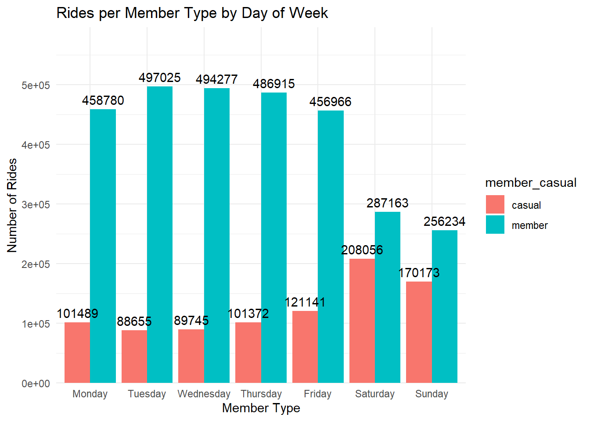
# bar chart avg ride time / member_casual / day of week
df %>%
mutate(day_of_week = factor(day_of_week, levels = c("Monday", "Tuesday", "Wednesday", "Thursday", "Friday", "Saturday", "Sunday"))) %>%
group_by(member_casual, day_of_week) %>%
summarise(avg_ride_length = mean(ride_length, na.rm = TRUE)) %>%
ggplot(aes(x = member_casual, y = avg_ride_length, fill = member_casual)) +
geom_bar(stat = "identity", position = "dodge") +
geom_text(aes(label = round(avg_ride_length, 1)), vjust = -0.5, position = position_dodge(0.9)) +
facet_wrap(~day_of_week) +
theme_minimal() +
labs(title = "Average Ride Length per Member Type by Day of Week", x = "Member Type", y = "Average Ride Length (minutes)") +
scale_y_continuous(expand = expansion(mult = c(0, 0.2)))## `summarise()` has grouped output by 'member_casual'. You can override using the
## `.groups` argument.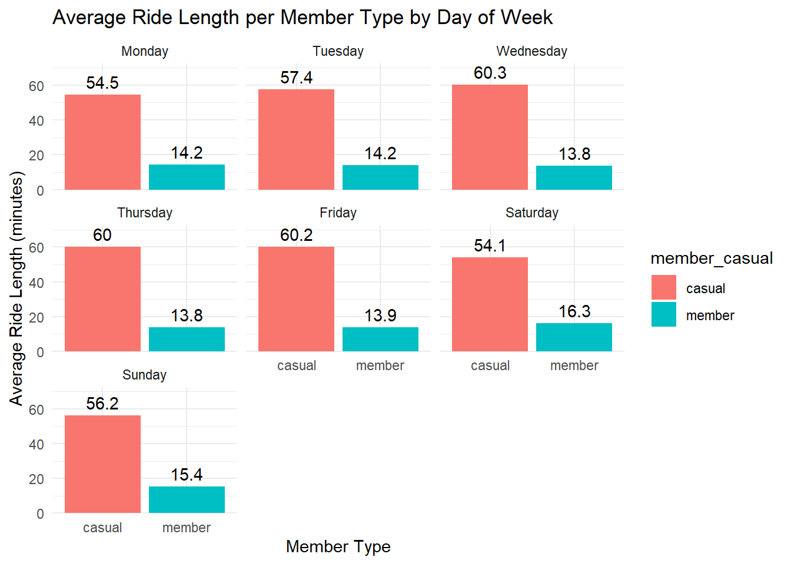
# bar chart avg ride time / member_casual / day of week
df %>%
mutate(day_of_week = factor(day_of_week, levels = c("Monday", "Tuesday", "Wednesday", "Thursday", "Friday", "Saturday", "Sunday"))) %>%
group_by(member_casual, day_of_week) %>%
summarise(avg_ride_length = mean(ride_length, na.rm = TRUE)) %>%
ggplot(aes(x = day_of_week, y = avg_ride_length, fill = member_casual)) +
geom_bar(stat = "identity", position = "dodge") +
geom_text(aes(label = round(avg_ride_length, 1)), vjust = -0.5, position = position_dodge(0.9)) +
theme_minimal() +
labs(title = "Average Ride Length per Member Type by Day of Week", x = "Member Type", y = "Average Ride Length (minutes)") +
scale_y_continuous(expand = expansion(mult = c(0, 0.2)))## `summarise()` has grouped output by 'member_casual'. You can override using the
## `.groups` argument.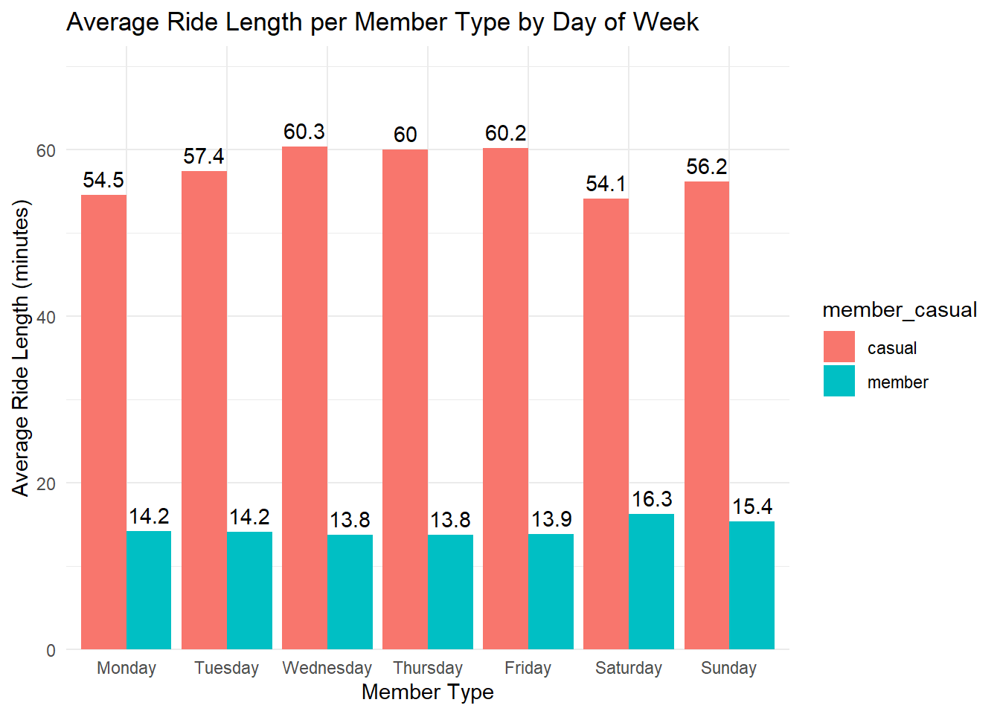
# aggregate member rider counts by hour and day of the week
member_peak_times <- df %>%
mutate(day_of_week = factor(day_of_week, levels = c("Monday", "Tuesday", "Wednesday", "Thursday", "Friday", "Saturday", "Sunday"))) %>%
filter(member_casual == "member") %>%
group_by(day_of_week, hour) %>%
summarise(rides = n(), .groups = "drop")
# heatmap of peak times for member riders
ggplot(member_peak_times, aes(x = hour, y = day_of_week, fill = rides)) +
geom_tile() +
scale_fill_viridis_c() +
theme_minimal() +
labs(title = "Peak Usage Times for Member Riders", x = "Hour of Day", y = "Day of Week")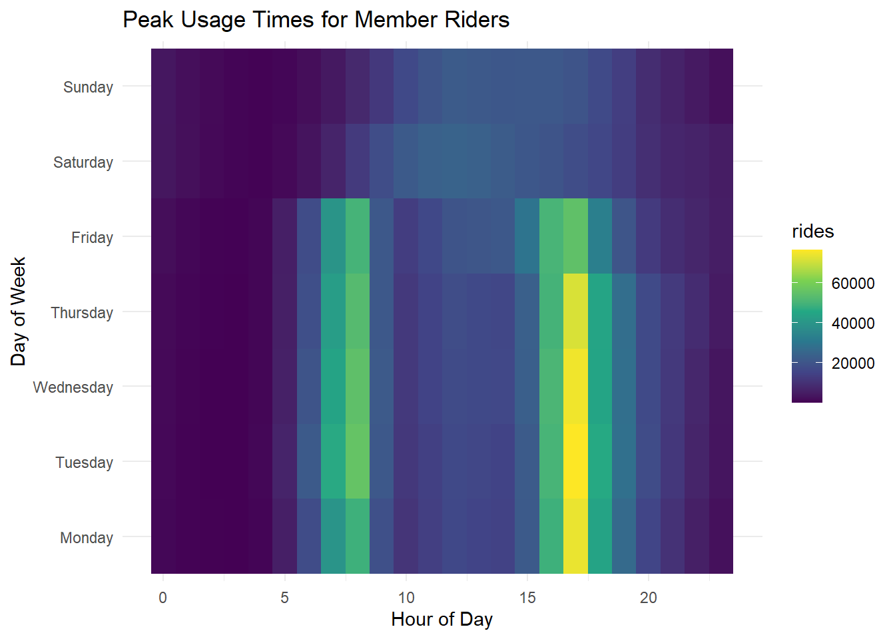
Members peak with commuter hours.
# aggregate casual rider counts by hour and day of the week
casual_peak_times <- df %>%
mutate(day_of_week = factor(day_of_week, levels = c("Monday", "Tuesday", "Wednesday", "Thursday", "Friday", "Saturday", "Sunday"))) %>%
filter(member_casual == "casual") %>%
group_by(day_of_week, hour) %>%
summarise(rides = n(), .groups = "drop")
# heatmap of peak times for casual riders
ggplot(casual_peak_times, aes(x = hour, y = day_of_week, fill = rides)) +
geom_tile() +
scale_fill_viridis_c() +
theme_minimal() +
labs(title = "Peak Usage Times for Casual Riders", x = "Hour of Day", y = "Day of Week")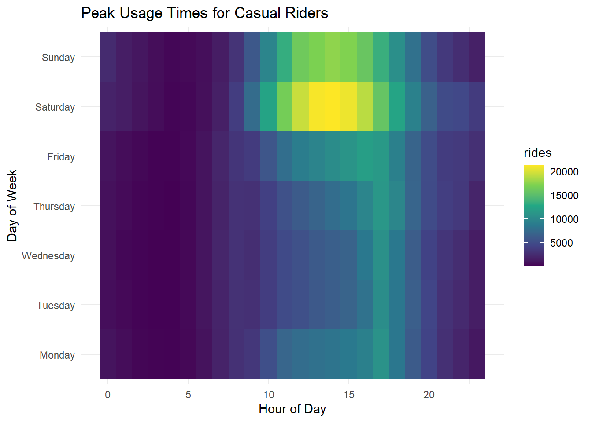
Peak time is Saturday afternoon, followed by Sunday afternoon. Unsurprising.
Stations
# map all stations
# convert the stations_2020 data frame to an sf object
stations_sf <- stations %>%
drop_na() %>%
st_as_sf(coords = c("longitude", "latitude"), crs = 4326)
# plot map with all station locations
ggplot() +
annotation_map_tile(type = "osm", zoom = 12) +
geom_sf(data = stations_sf, color = "red", size = 2) +
labs(
title = "Scatter Plot of all Station Locations",
x = "Longitude",
y = "Latitude"
) +
theme_minimal()## Zoom: 12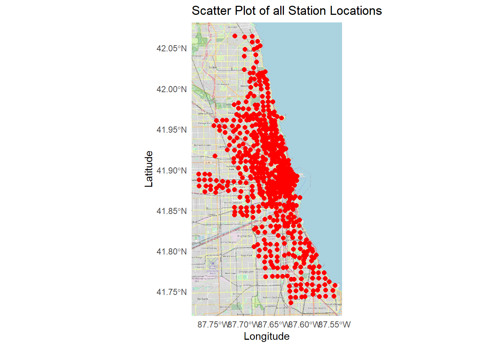
# bar chart: top start stations
df %>%
count(start_station_name, member_casual, sort = TRUE) %>%
group_by(member_casual) %>%
top_n(20, n) %>%
ggplot(aes(x = reorder(start_station_name, n), y = n, fill = member_casual)) +
geom_col() +
coord_flip() +
theme_minimal() +
labs(title = "Top Start Stations by Rider Type", x = "Station Name", y = "Number of Rides")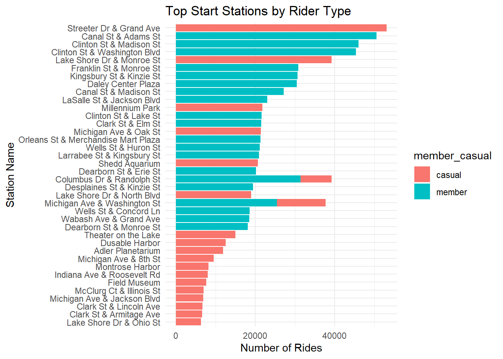 Those two bars are weird and don’t seem right. I am guessing that if I knew the geography of Chicago, the casual / member stations would be more illuminating. “Milleniumn Park”, “Shedd Aquarium”, “Theater on the Lake”, “Dusable Harbor”, and “Adler Planetarium” sound like destinations for the occasional bike rider.
# bar chart: top end stations
df %>%
count(end_station_name, member_casual, sort = TRUE) %>%
group_by(member_casual) %>%
top_n(20, n) %>%
ggplot(aes(x = reorder(end_station_name, n), y = n, fill = member_casual)) +
geom_col() +
coord_flip() +
theme_minimal() +
labs(title = "Top End Stations by Rider Type", x = "Station Name", y = "Number of Rides")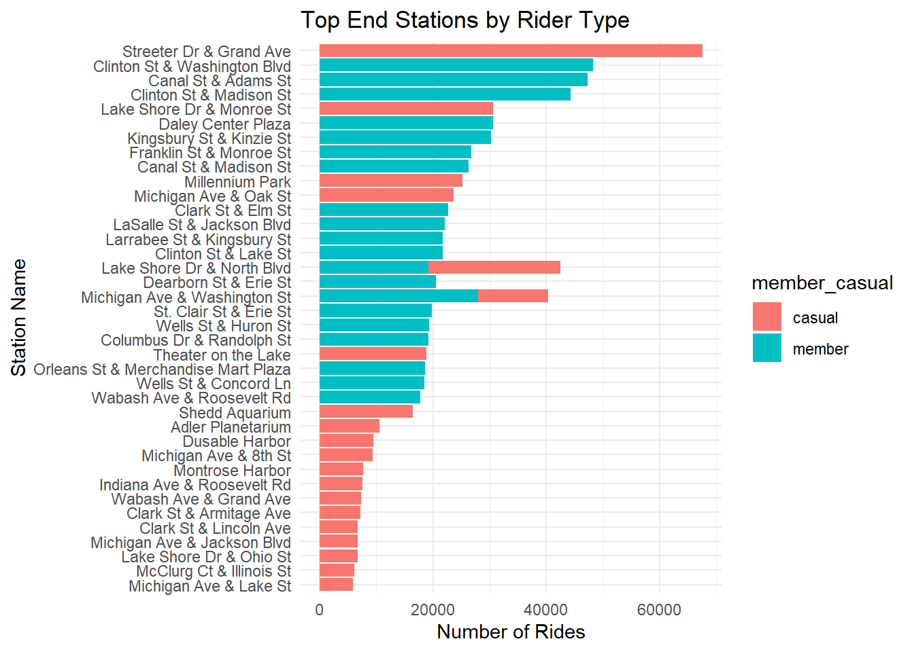
# most popular start stations
top_stations <- df %>%
count(start_station_name, member_casual, sort = TRUE) %>%
group_by(member_casual) %>%
top_n(20, n)
print(top_stations)## # A tibble: 40 × 3
## # Groups: member_casual [2]
## start_station_name member_casual n
## <chr> <chr> <int>
## 1 Streeter Dr & Grand Ave casual 53104
## 2 Canal St & Adams St member 50575
## 3 Clinton St & Madison St member 45990
## 4 Clinton St & Washington Blvd member 45378
## 5 Lake Shore Dr & Monroe St casual 39238
## 6 Columbus Dr & Randolph St member 31370
## 7 Franklin St & Monroe St member 30832
## 8 Kingsbury St & Kinzie St member 30654
## 9 Daley Center Plaza member 30423
## 10 Canal St & Madison St member 27138
## # ℹ 30 more rows# most popular end stations
top_stations <- df %>%
count(end_station_name, member_casual, sort = TRUE) %>%
group_by(member_casual) %>%
top_n(20, n)
print(top_stations)## # A tibble: 40 × 3
## # Groups: member_casual [2]
## end_station_name member_casual n
## <chr> <chr> <int>
## 1 Streeter Dr & Grand Ave casual 67585
## 2 Clinton St & Washington Blvd member 48193
## 3 Canal St & Adams St member 47330
## 4 Clinton St & Madison St member 44307
## 5 Lake Shore Dr & Monroe St casual 30673
## 6 Daley Center Plaza member 30631
## 7 Kingsbury St & Kinzie St member 30212
## 8 Michigan Ave & Washington St member 27934
## 9 Franklin St & Monroe St member 26763
## 10 Canal St & Madison St member 26339
## # ℹ 30 more rows
# Leaflet: popular start stations with cleaned data
library(leaflet)
# remove rows with missing latitude or longitude values
cleaned_data <- df %>%
filter(!is.na(start_lng) & !is.na(start_lat))
# get a sample - too many rows, it crashes my computer to plot all 4 million
set.seed(123) # for reproducibility of sample
cleaned_data <- cleaned_data %>% sample_n(1000)
# plot sampled stations
leaflet(data = cleaned_data) %>%
addTiles() %>%
addMarkers(lng = ~start_lng, lat = ~start_lat, clusterOptions = markerClusterOptions())
# Leaflet: popular end stations with cleaned data
# remove rows with missing latitude or longitude values
cleaned_data <- df %>%
filter(!is.na(end_lng) & !is.na(end_lat))
# get a sample - too many rows, it crashes my computer to plot all 4 million
set.seed(123) # for reproducibility of sample
cleaned_data <- cleaned_data %>% sample_n(1000)
# plot sampled stations
leaflet(data = cleaned_data) %>%
addTiles() %>%
addMarkers(lng = ~end_lng, lat = ~end_lat, clusterOptions = markerClusterOptions())
# sample data
set.seed(123) # for reproducibility
cleaned_data <- df %>% sample_n(1000)
# create linestring geometries for routes
routes <- cleaned_data %>%
drop_na(start_lng, start_lat, end_lng, end_lat) %>%
rowwise() %>%
mutate(geometry = st_sfc(st_linestring(matrix(c(start_lng, start_lat, end_lng, end_lat), ncol = 2, byrow = TRUE)), crs = 4326)) %>%
st_as_sf()
# plot routes
ggplot() +
annotation_map_tile(type = "osm", zoom = 12) +
geom_sf(data = routes, aes(geometry = geometry), color = "blue", size = 0.5, alpha = 0.5) +
labs(
title = "Sample Routes",
x = "Longitude",
y = "Latitude"
) +
theme_minimal()## Zoom: 12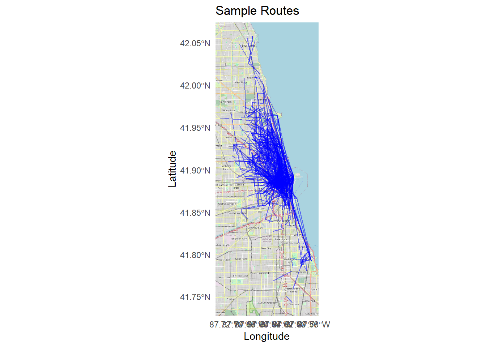
Bar chart and maps of top casual stations
# aggregate casual rider counts by station
casual_peak_stations <- df %>%
filter(member_casual == "casual") %>%
count(start_station_name, sort = TRUE) %>%
top_n(10, n)
# bar chart of top stations for casual riders
ggplot(casual_peak_stations, aes(x = reorder(start_station_name, n), y = n, fill = start_station_name)) +
geom_col(show.legend = FALSE) +
coord_flip() +
theme_minimal() +
labs(title = "Top Start Stations for Casual Riders", x = "Station Name", y = "Number of Rides")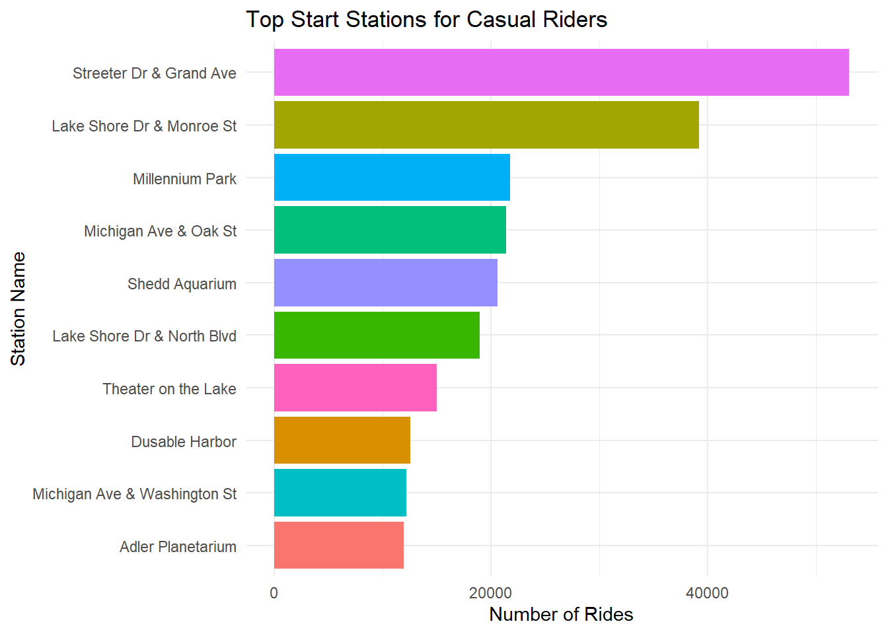
# map of top start stations for casual riders
# convert top casual start stations to sf object
casual_start_sf <- casual_peak_stations %>%
left_join(df, by = c("start_station_name")) %>% # Join to get lat/lng
distinct(start_station_name, start_lat, start_lng) %>% # Remove duplicates
drop_na(start_lat, start_lng) %>%
st_as_sf(coords = c("start_lng", "start_lat"), crs = 4326)
# plot map
ggplot() +
annotation_map_tile(type = "osm", zoom = 12) +
geom_sf(data = casual_start_sf, color = "blue", size = 3, alpha = 0.7) +
labs(
title = "Top Start Stations for Casual Riders (Map)",
x = "Longitude", y = "Latitude"
) +
theme_minimal()## Zoom: 12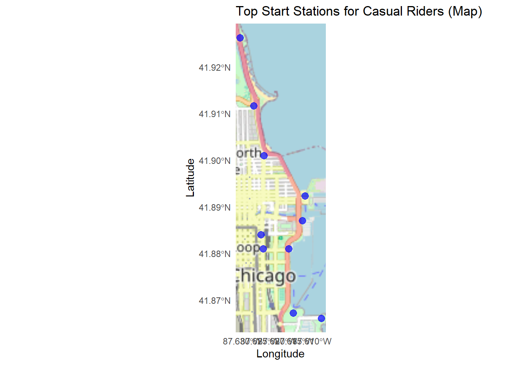
# extract end stations for trips originating at top casual start stations
casual_end_from_start_sf <- df %>%
filter(start_station_name %in% casual_peak_stations$start_station_name) %>%
distinct(start_station_name, end_station_name, end_lat, end_lng) %>%
drop_na(end_lat, end_lng) %>%
st_as_sf(coords = c("end_lng", "end_lat"), crs = 4326)
# plot map
ggplot() +
annotation_map_tile(type = "osm", zoom = 12) +
geom_sf(data = casual_end_from_start_sf, color = "blue", size = 3, alpha = 0.7) +
labs(
title = "End Stations for Trips from Top Start Stations (Casual Riders)",
x = "Longitude", y = "Latitude"
) +
theme_minimal()## Zoom: 12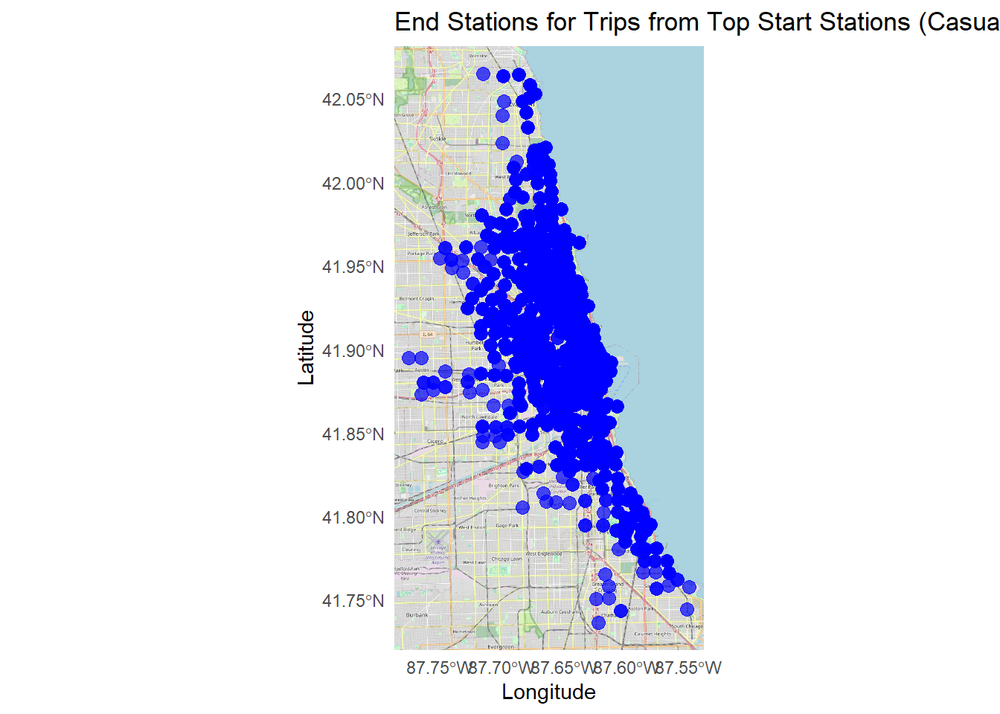
# aggregate casual rider counts by station
casual_peak_stations <- df %>%
filter(member_casual == "casual") %>%
count(end_station_name, sort = TRUE) %>%
top_n(10, n)
# bar chart of top stations for casual riders
ggplot(casual_peak_stations, aes(x = reorder(end_station_name, n), y = n, fill = end_station_name)) +
geom_col(show.legend = FALSE) +
coord_flip() +
theme_minimal() +
labs(title = "Top End Stations for Casual Riders", x = "Station Name", y = "Number of Rides")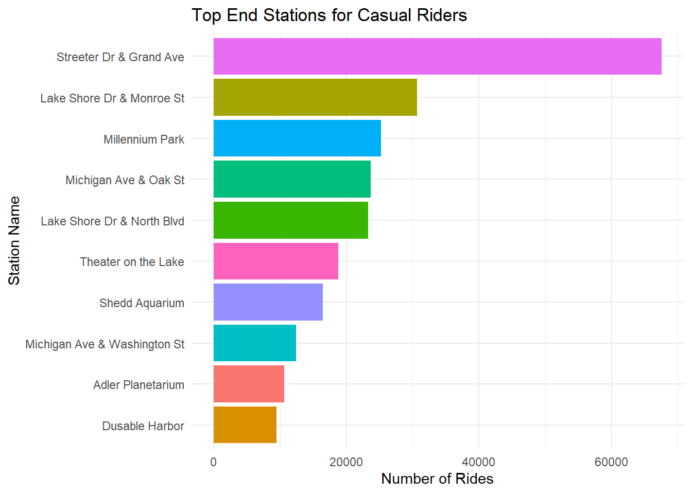
# convert top casual end stations to sf object
casual_end_sf <- casual_peak_stations %>%
left_join(df, by = c("end_station_name")) %>%
distinct(end_station_name, end_lat, end_lng) %>%
drop_na(end_lat, end_lng) %>%
st_as_sf(coords = c("end_lng", "end_lat"), crs = 4326)
# plot map
ggplot() +
annotation_map_tile(type = "osm", zoom = 12) +
geom_sf(data = casual_end_sf, color = "blue", size = 3, alpha = 0.7) +
labs(
title = "Top End Stations for Casual Riders (Map)",
x = "Longitude", y = "Latitude"
) +
theme_minimal()## Zoom: 12# extract start stations for trips ending at top casual end stations
casual_start_from_end_sf <- df %>%
filter(end_station_name %in% casual_peak_stations$end_station_name) %>%
distinct(end_station_name, start_station_name, start_lat, start_lng) %>%
drop_na(start_lat, start_lng) %>%
st_as_sf(coords = c("start_lng", "start_lat"), crs = 4326)
# plot map
ggplot() +
annotation_map_tile(type = "osm", zoom = 12) +
geom_sf(data = casual_start_from_end_sf, color = "blue", size = 3, alpha = 0.7) +
labs(
title = "Start Stations for Trips Ending at Top End Stations (Casual Riders)",
x = "Longitude", y = "Latitude"
) +
theme_minimal()## Zoom: 12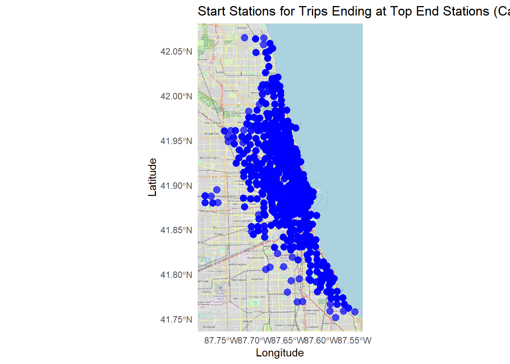
Bar chart and maps of top member stations
# aggregate member rider counts by station
member_peak_stations <- df %>%
filter(member_casual == "member") %>%
count(start_station_name, sort = TRUE) %>%
top_n(10, n)
# bar chart of top stations for member riders
ggplot(member_peak_stations, aes(x = reorder(start_station_name, n), y = n, fill = start_station_name)) +
geom_col(show.legend = FALSE) +
coord_flip() +
theme_minimal() +
labs(title = "Top Start Stations for Member Riders", x = "Station Name", y = "Number of Rides")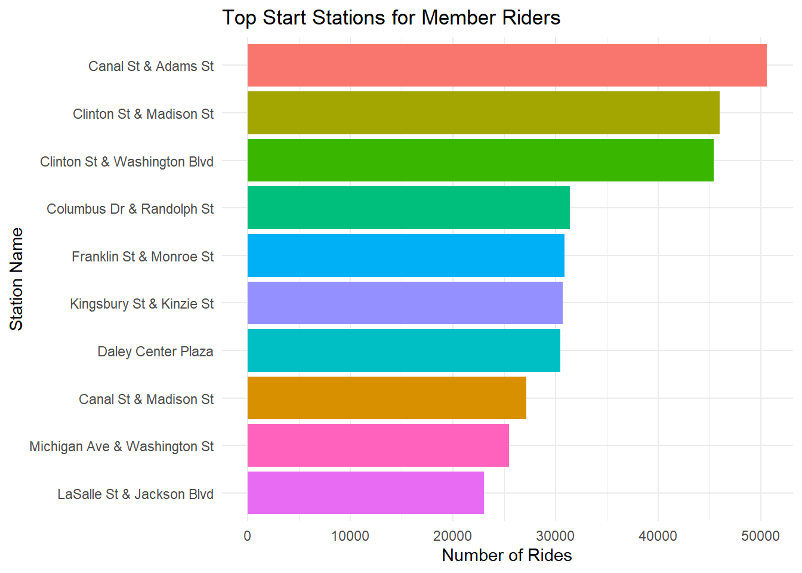
# convert top member start stations to sf object
member_start_sf <- member_peak_stations %>%
left_join(df, by = c("start_station_name")) %>%
distinct(start_station_name, start_lat, start_lng) %>%
drop_na(start_lat, start_lng) %>%
st_as_sf(coords = c("start_lng", "start_lat"), crs = 4326)
# plot map
ggplot() +
annotation_map_tile(type = "osm", zoom = 12) +
geom_sf(data = member_start_sf, color = "red", size = 3, alpha = 0.7) +
labs(
title = "Top Start Stations for Member Riders (Map)",
x = "Longitude", y = "Latitude"
) +
theme_minimal()## Zoom: 12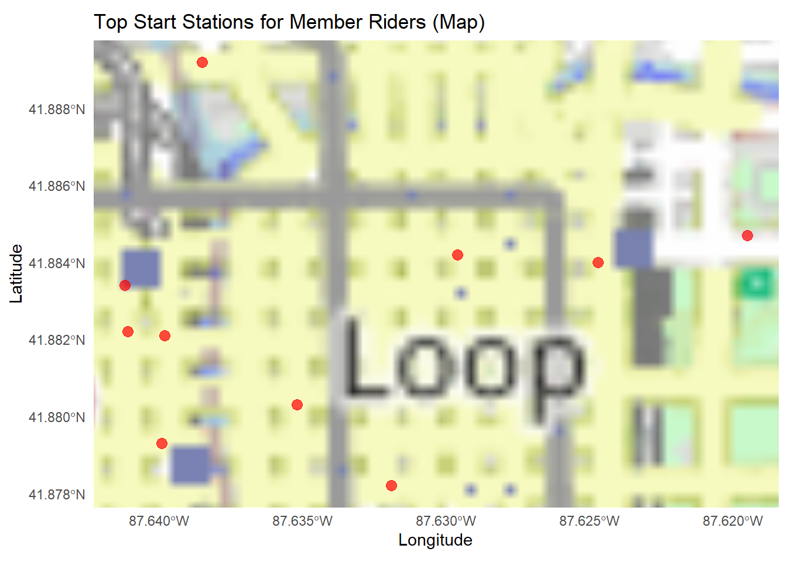
# extract end stations for trips starting at top member start stations
member_end_sf <- df %>%
filter(start_station_name %in% member_peak_stations$start_station_name) %>%
distinct(start_station_name, end_station_name, end_lat, end_lng) %>%
drop_na(end_lat, end_lng) %>%
st_as_sf(coords = c("end_lng", "end_lat"), crs = 4326)
# plot map
ggplot() +
annotation_map_tile(type = "osm", zoom = 12) +
geom_sf(data = member_end_sf, color = "blue", size = 3, alpha = 0.7) +
labs(
title = "End Stations for Trips from Top Start Stations",
x = "Longitude", y = "Latitude"
) +
theme_minimal()## Zoom: 12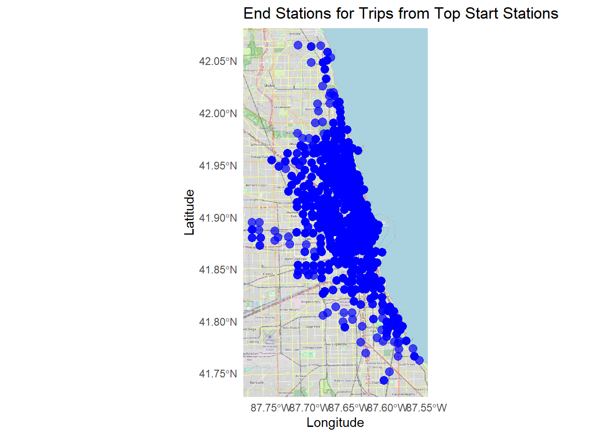
# aggregate member rider counts by station
member_peak_stations <- df %>%
filter(member_casual == "member") %>%
count(end_station_name, sort = TRUE) %>%
top_n(10, n)
# bar chart of top stations for member riders
ggplot(member_peak_stations, aes(x = reorder(end_station_name, n), y = n, fill = end_station_name)) +
geom_col(show.legend = FALSE) +
coord_flip() +
theme_minimal() +
labs(title = "Top End Stations for Member Riders", x = "Station Name", y = "Number of Rides")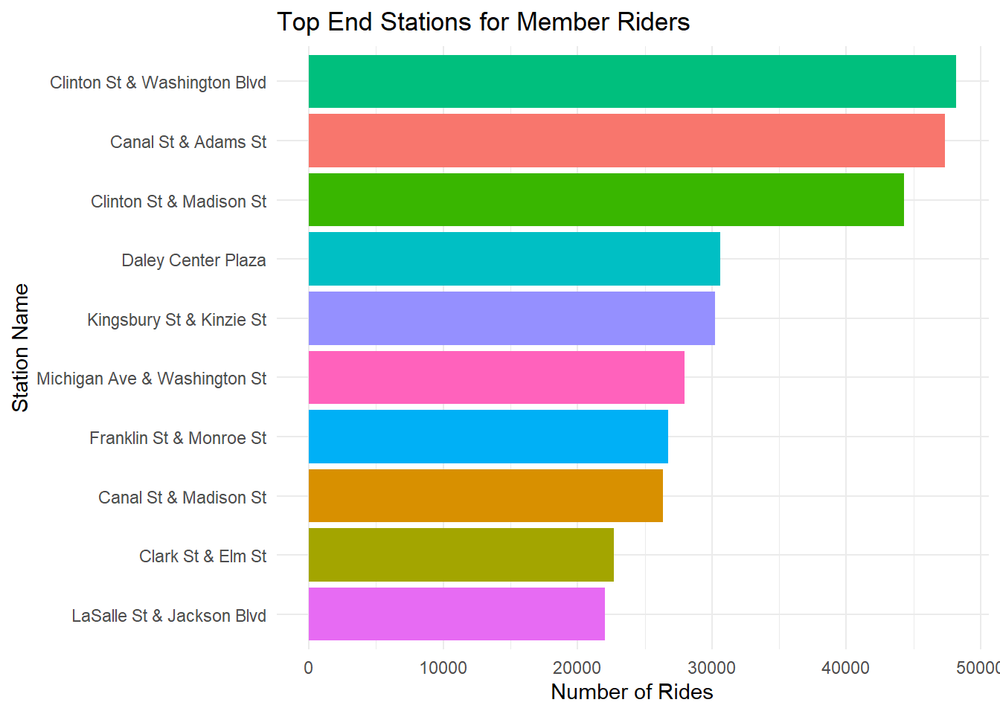
# convert top member end stations to sf object
member_end_sf <- member_peak_stations %>%
left_join(df, by = c("end_station_name")) %>%
distinct(end_station_name, end_lat, end_lng) %>%
drop_na(end_lat, end_lng) %>%
st_as_sf(coords = c("end_lng", "end_lat"), crs = 4326)
# plot map
ggplot() +
annotation_map_tile(type = "osm", zoom = 12) +
geom_sf(data = member_end_sf, color = "red", size = 3, alpha = 0.7) +
labs(
title = "Top End Stations for Member Riders (Map)",
x = "Longitude", y = "Latitude"
) +
theme_minimal()## Zoom: 12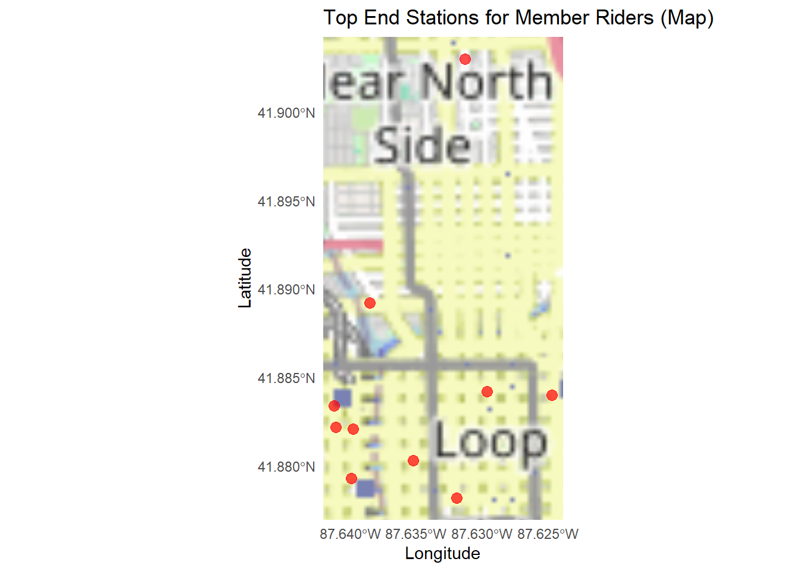
# extract start stations for trips ending at top member end stations
member_start_sf <- df %>%
filter(end_station_name %in% member_peak_stations$end_station_name) %>%
distinct(end_station_name, start_station_name, start_lat, start_lng) %>%
drop_na(start_lat, start_lng) %>%
st_as_sf(coords = c("start_lng", "start_lat"), crs = 4326)
# plot map
ggplot() +
annotation_map_tile(type = "osm", zoom = 12) +
geom_sf(data = member_start_sf, color = "blue", size = 3, alpha = 0.7) +
labs(
title = "Start Stations for Trips Ending at Top End Stations",
x = "Longitude", y = "Latitude"
) +
theme_minimal()## Zoom: 12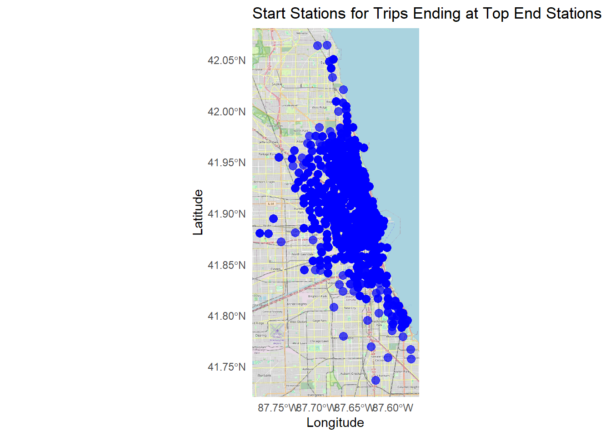
Demographics
Remember, this is member rides and casual rides, so member’s presumably will be over respresented.
# age distribution
ggplot(df, aes(x = 2020 - birthyear, fill = member_casual)) +
geom_histogram(binwidth = 5, alpha = 0.7, position = "dodge") +
# stat_bin(binwidth = 5, geom = "text", aes(label = ..count..), vjust = -0.5, position = position_dodge(5)) +
theme_minimal() +
labs(title = "Age Distribution by Rider Type", x = "Age", y = "Count") +
xlim(0, 100)## Warning: Removed 539529 rows containing non-finite outside the scale range
## (`stat_bin()`).## Warning: Removed 2 rows containing missing values or values outside the scale range
## (`geom_bar()`).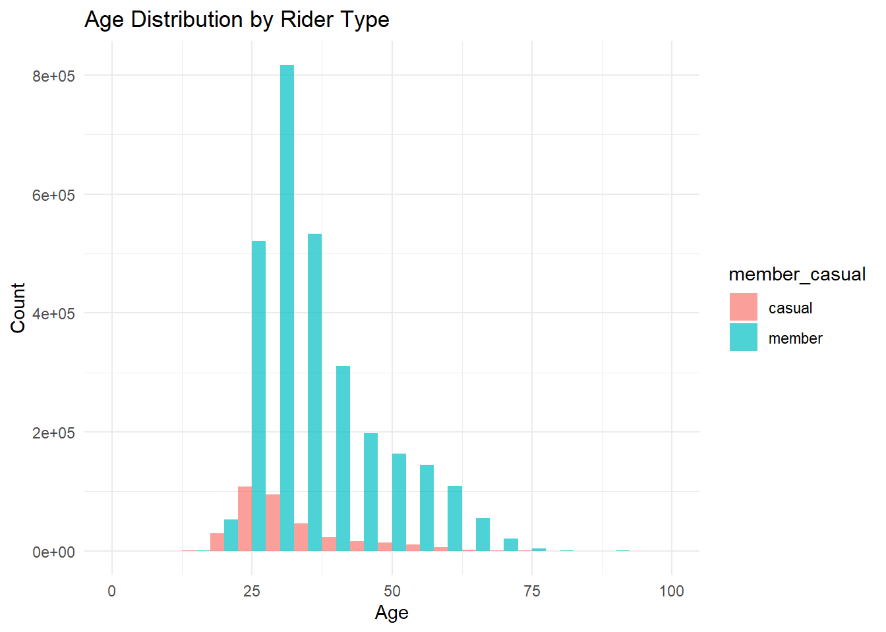
# gender split
ggplot(df, aes(x = gender, fill = member_casual)) +
geom_bar(position = "dodge") +
geom_text(stat = "count", aes(label = ..count..), vjust = -0.5, position = position_dodge(0.9)) +
theme_minimal() +
labs(title = "Gender Breakdown by Rider Type", x = "Gender", y = "Count")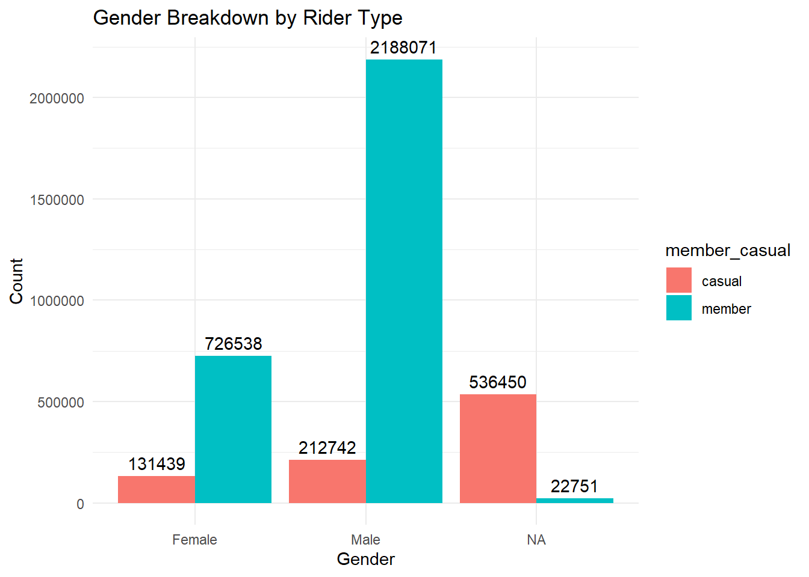
I went through a lot of effort to extract the age and gender data, and it might not have been worth the value-added to see that member riders are slightly older and tend to be male-dominated. Not sure this helps me launch an ad campaign.
And that was how I ended up going on to recent data, 2024…
Source: Freepik